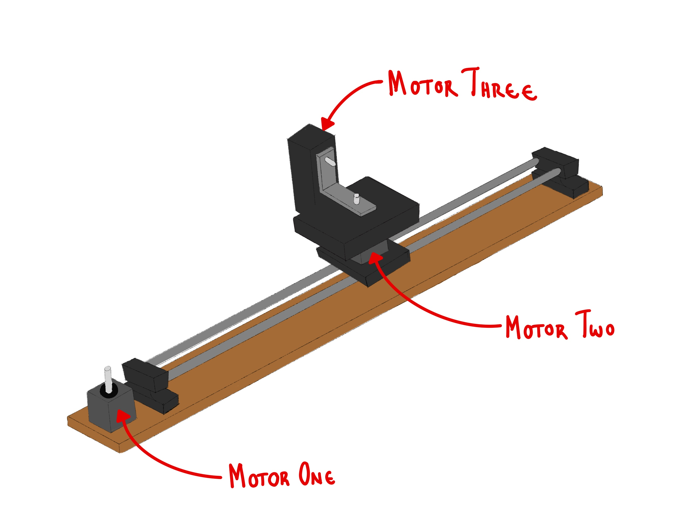
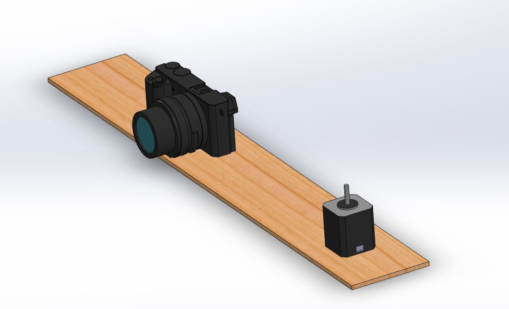
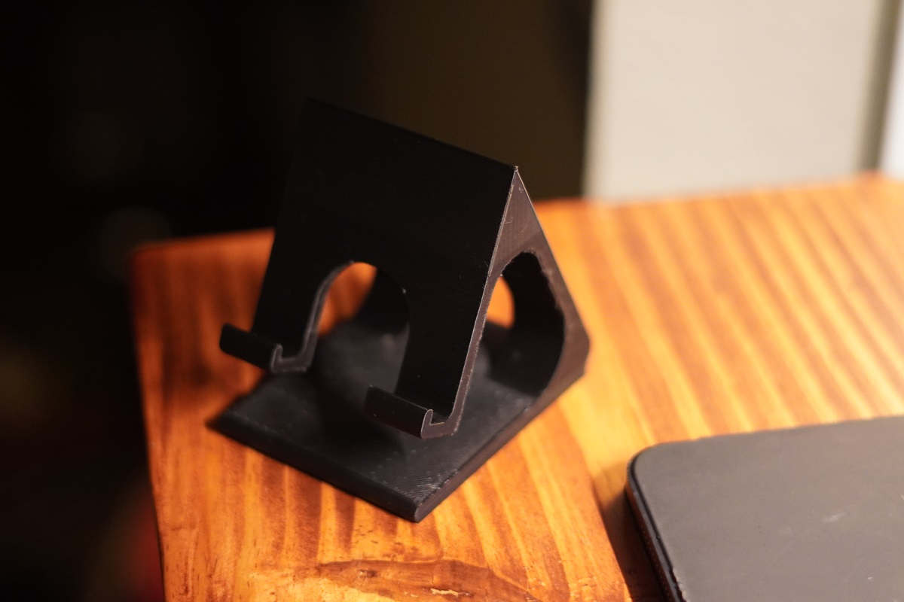
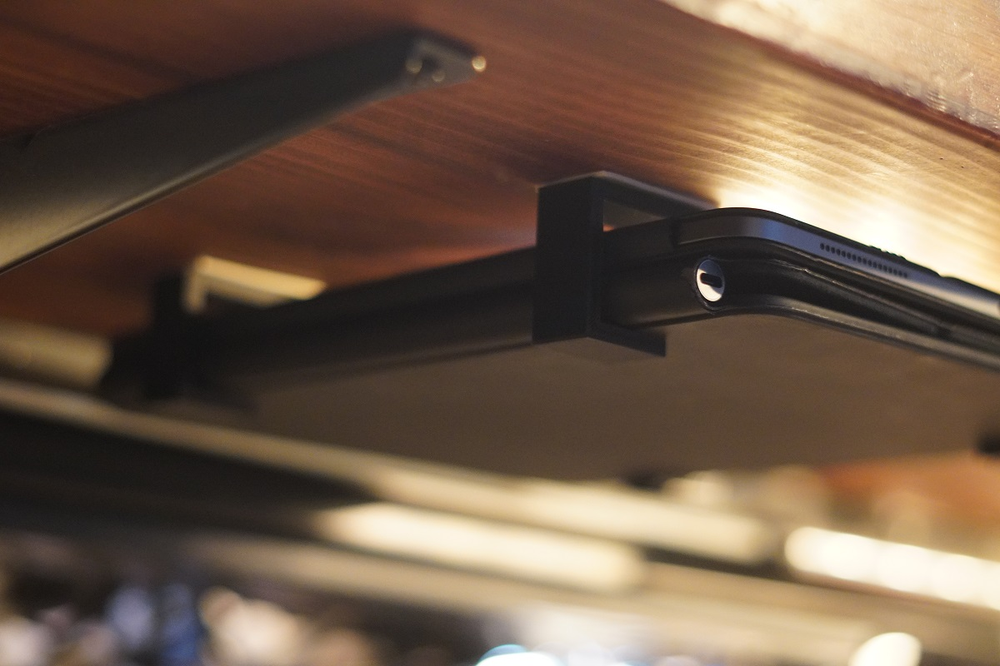
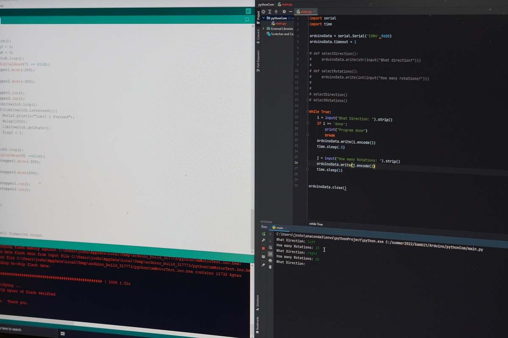

Having a good sleeping schedule is something I only have when my bad sleeping schedule happens to sync with the normal hours in a day. The reason it is so bad is because I am a huge advocate of naps. These naps have been the death of my productivity over this journey. Today, my nap took up a larger part of my day that I wish I could have dedicated to some of the projects I have been doing.
I am going to try to stop taking naps. Atleast naps that span any more than 30 minutes. This would not only give me more time throughout the day to work on things, but do more in the sense of making sure that I fall asleep earlier and align more with a good sleeping schedule.
Even with the nap that took up a chunk of my afternoon, I had yet another good day. From finally getting python to communicate with my arduino, to finishing up my sketch of the camera slider and starting on the model. Tomorrow will be the first day I try implementing this nap policy, so let's see what can get accomplished.
Camera Slider
In finalizing the camera slide sketch, I was able to narrow in on the parts that needed to be designed for and the parts that I would simply use from what I have laying around. Ultimately, the system comprises of 3 motors. Motor one is responsible for 'sliding' the camera. Motor two rotates the camera about its mount. Lastly, motor three will control the tilt of the camera.
 Camera Glider SketchThe system does not seem too complex, I just need to settle on dimensions that will hold the camera and motors across the system. With this sketch complete, I went ahead and modeled the base board that uses dimensions of a piece of scrap wood I have laying around and the stepper that I plan on using. Thankfully, I was able to find a model of the camera that I imported into the system for dimension and assembly purposes.
Tomorrow, I will complete the sketch and start modeling some of the known parts like the base board, stepper motors, and rods I am going to use. There's no way I am going to model the camera as it would take me far longer than I would like, so I hope to find a model online somewhere that I could use.
 Camera Glider Model3D Printing
The phone holder finished printing. It took about 9 and a half hours that was accompanied by a high pitched sound that kept me awake throughout the night. Although it was pretty easy to print and required little post-processing, I did learn a few things. I should have orietned the print better so that it would not require as much supports to create. Doing so would have saved me the fear of breaking it as I was removing the interior supports. It also would have drastically decreased the printing time and costs.
 Phone HolderWith the phone holder complete, I went ahead and quickly modeled something that would go on to solve a minor problem I have been dealing with. Whenever I need my Ipad, I always forget where I previously left it or whenever I don't need it, it is taking up a large amount of space on one of my desks. To resolve this, I quickly created some c bracket mounts that I would go on to place under my desk to comfortably hold my ipad and the cases I have for it. Lets hope it doesn't fall in the middle of the night.
 Ipad Holder C BracketPython Arduino Communication
I was finally able to get a python script able to communicate with an arduino. It was actually a lot easier than I thought it would be. It simply writes and reads information to the serial monitor on the Arduino. What I actually had more trouble with was my limit switches cooperating with me. Ultimately, it was a simple fix in altering a while loop in the arduino script, but it was not simple in getting there. Nevertheless, I am glad I was able to get python working on the arduino. I am excited to what posibilities await this.
 The Python and Arduino DuoHabit Tracking
Today, I journaled, worked out, read, tracked my caloric intake, and worked on at least one of my personal projects. Today was a good day.
What I am thankful for
I am thankful for my parents. They have done nothing but support and love me throughout all of my ventures.
Strive for progress, not perfection. Do More. - J.D.